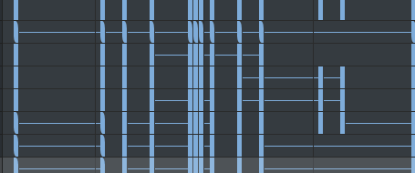
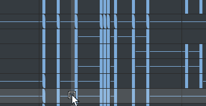

-
许多菜单项的显示和行为与场景视图中的主“编辑”(Edit)菜单类似。但是，由于“摄影表”(Dope Sheet)直接处理动画通道和属性，因此编辑功能的设置窗口内没有可用的层次选项。
- 这些设置与“曲线图编辑器”(Graph Editor)的“编辑”(Edit)菜单设置类似。
- 撤消/重做(Undo/Redo)
- 热键：Ctrl+Z/Ctrl+Y
-
“撤消”(Undo)会取消上一个操作。“重做”(Redo)会重做上次撤消的操作。
- 剪切(Cut)
- 热键：Ctrl+X
-
“剪切”(Cut)可从选定属性中移除现有关键帧，并将该信息的副本放置在剪贴板中。如果在视图区域中选择了一组关键帧，则在选择“编辑 > 剪切”(Edit > Cut)时，该区域将被移除。如果未选择关键帧，则“剪切”(Cut)将对在“摄影表编辑器”(Dope Sheet Editor)的“大纲视图”(Outliner)部分中选定的项进行操作。
- 选择“编辑 > 剪切”(Edit > Cut) >
 ，以查看剪切关键帧选项(Cut Keys options)。
，以查看剪切关键帧选项(Cut Keys options)。
- 复制(Copy)
- 热键：Ctrl+C
- 将现有关键帧复制到剪贴板。如果在视图区域中选择了关键帧，则在选择“编辑 > 复制”(Edit > Copy)时，这些关键帧将被移除。如果未选择关键帧，则“复制”(Copy)将对在“摄影表编辑器”(Dope Sheet Editor)的“大纲视图”(Outliner)部分中选定的项进行操作。
- 选择“编辑 > 复制”(Edit > Copy) > ，查看有关复制关键帧选项(Copy Keys Options)的信息。
- 粘贴(Paste)
- 热键：Ctrl+V
-
“粘贴”(Paste)可将剪贴板中的关键帧添加到属性。已粘贴的关键帧可与现有关键帧合并、一次性插入（置换现有关键帧）或用来一次性替换关键帧。
- 选择“编辑 > 粘贴”(Edit > Paste) > ，查看有关粘贴关键帧选项(Paste Keys Options)的信息。另请参见“关键帧”(Key)菜单中的“关键帧 > 粘贴”(Key > Paste)。
- 删除(Delete)
- 热键：Delete
-
删除操作将从选定属性中移除现有关键帧。它与“剪切”(Cut)的工作原理一样，但不会将已移除关键帧的副本放进关键帧剪贴板。请参见“关键帧”(Key)菜单中的“关键帧 > 删除”(Key > Delete)。
- 选择“编辑 > 删除”(Edit > Delete) > ，查看有关删除关键帧选项(Delete Keys Options)的信息。
- 编辑(Edit)
-
- 缩放(Scale)
-
缩放的操作对象是选定的关键帧范围，通过延长或压缩动画来对应新的时间范围。请注意，如果在“摄影表”(Dope Sheet)大纲视图中选择了属性（例如“平移 Y”(Translate Y)），但没有选择任何关键帧，则“缩放”(Scale)将对整个关键帧范围进行操作。请参见“关键帧”(Key)菜单中的“关键帧 > 缩放”(Key > Scale)。
- 选择“编辑 > 缩放”(Edit > Scale) > ，查看有关缩放关键帧选项(Scale Keys Options)的信息。
- 变换工具(Transformation Tools)
- 打开一个子菜单，从中可以访问用于在“摄影表”(Dope Sheet)中进行编辑的工具。
选择工具(Select Tool) 
（热键：Q） -
使用“选择工具”(Select Tool)选择单个关键帧。
-
按住 Shift 键并选择以取消选择关键帧。
-
使用鼠标中键拖动以移动关键帧。
若要缩放关键帧，或同时编辑多个关键帧，请使用“选择关键帧”(Select Keys)操纵器
 。
。
选择关键帧(Select Keys)
使用“选择关键帧”(Select Keys)操纵器拖动选择关键帧组。有关使用“选择关键帧”(Select Keys)操纵器编辑关键帧组的详细信息，请参见使用“摄影表”(Dope Sheet)编辑关键帧。 注： “变换工具 > 选择关键帧”(Transformation Tools > Select Keys)操纵器与“选择工具”(Select Tool) 不同，因为尽管这两个工具都允许您选择多个关键帧，但“选择关键帧”(Select Keys) 使用可调整大小的操纵器，您可以在其中查看帧编号。
插入关键帧(Insert Keys) 
使用“插入关键帧”(Insert Keys)将新关键帧放置到现有动画通道上。单击该关键帧以将其选定并添加新关键帧。 移动最近拾取的关键帧(Move Nearest Picked Key) 
使用“移动最近拾取的关键帧”(Move Nearest Picked Key)，通过单个鼠标操作来操纵各个关键帧。 此工具与“移动工具”(Move Tool)不同，因为它仅作用于一个关键帧，或作用于活动通道的最近选定关键帧，而无需在视图区域中精确选择关键帧。
选择“移动最近拾取的关键帧”(Move Nearest Picked Key) >，查看“移动最近拾取的关键帧工具设置”(Move Nearest Picked Key Tool Settings)：
仅移动(Move Only) 用于在前一个和后一个关键帧的区域内拖动关键帧。
移过(Move Over) 用于将关键帧拖动到视图区域中的任意位置。
涟漪(Ripple) 用于将关键帧拖动到视图区域中的任意位置，但会按与移动相同的量将关键帧推动到选择内容之后，使关键帧进行调整以保持同步。

“仅移动”(Move Only)、“移过”(Move Over)和“涟漪”(Ripple)选项的演示。
也可以通过双击“摄影表”(Dope Sheet)工具栏中的“移动最近拾取的关键帧”(Move Nearest Picked Key)图标
来打开“移动最近拾取的关键帧工具设置”(Move Nearest Picked Key Tool Settings)。
移动关键帧工具(Move Keys Tool) 
热键：W 选择“移动关键帧工具”(Move Keys Tool) >，查看“移动关键帧工具设置”(Move Keys Tool Settings)：
仅移动(Move Only) 用于在前一个和后一个关键帧的区域内拖动关键帧。
移过(Move Over) 用于将关键帧拖动到视图区域中的任意位置。
涟漪(Ripple) 用于将关键帧拖动到视图区域中的任意位置，但会按与移动相同的量将关键帧推动到选择内容之后，使关键帧进行调整以保持同步。
“仅移动”(Move Only)、“移过”(Move Over)和“涟漪”(Ripple)选项的演示。
也可以通过双击“摄影表”(Dope Sheet)工具栏中的“移动关键帧工具”(Move Keys Tool)图标
来打开“移动关键帧工具设置”(Move Keys Tool Settings)。
缩放关键帧工具(Scale Keys Tool) 
热键：R
使用“缩放关键帧工具”(Scale Keys Tool)
更改一系列关键帧的持续时间，或更改动画通道上的值。拖动以选择一个或多个关键帧，然后使用白色操纵器控制柄调整大小。
选择“缩放关键帧工具”(Scale Keys Tool) >，查看“缩放关键帧工具设置”(Scale Keys Tool settings)：
操纵器(Manipulator) 可用于使用操纵器框围绕受影响的关键帧缩放关键帧。
操纵器(Manipulator)：拖动操纵器的两侧可缩放关键帧
光标为中心(Gestural) 用于拖动鼠标选择，而不是拖动缩放框来缩放关键帧。光标为中心(Gestural)：拖动可缩放选定关键帧
仅缩放选定关键帧(Only scale selected keys) 用于从缩放操作中排除未直接选择（亮显）的任何关键帧。注： 当“仅缩放选定关键帧”(Scale only selected keys)处于禁用状态时，关键帧将在“涟漪”(Ripple)模式下缩放，也就是说，选择后的关键帧将按相同的量推动，以便它们保持同步。也可以双击“摄影表”(Dope Sheet)工具栏中的“缩放关键帧工具”(Scale Keys Tool)图标
打开相同的缩放关键帧工具设置(Scale Keys Tool Settings)。
-
- 捕捉(Snap)
-
“捕捉”(Snap)将使选定关键帧在时间上捕捉到最近的整数时间单位值或属性值。使用“选择未捕捉对象”(Select Unsnapped)来检查未在整个时间单位内的关键帧。默认为捕捉到最近的时间单位。
- 也可以使用“摄影表”(Dope Sheet)工具栏上的“时间捕捉”(Time Snap)
 选项，强制视图区域中的关键帧移动到最接近的整数时间单位值。
选项，强制视图区域中的关键帧移动到最接近的整数时间单位值。
- 另请参见“关键帧”(Key)菜单中的“关键帧 > 捕捉”(Key > Snap)和捕捉关键帧选项(Snap Keys Options)。
- 选择未捕捉对象(Select Unsnapped)
-
从选定通道中选择所有关键帧，或者如果未选择非整个时间单位的对象或属性，则选择视图区域中的任何关键帧。
- 如果未选择对象或属性，则选择视图区域中的任何关键帧。